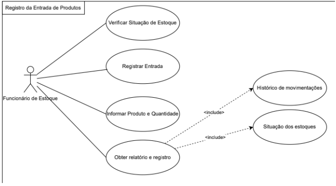

Diagrama de Caso de Uso
O sistema de assistente de viagens possui funcionalidades descritas no plano de requisitos e seus casos de uso seguem uma estrutura aprensentada a seguir.
Versão macro

Cenário de caso de uso (CCU1) - Pesquisa de novas viagens
Referente ao requisito funcional 1 (RF1: pesquisa de novas viagens)
- Ator primário:
- Ator secundário:
- Fluxo principal
| Etapa | Descrição | Pacotes envolvidos |
|---|---|---|
| 1 | Acessar | Auth |
| 2 | Login | Auth |
| 3 | Busca | Buscador |
| 4 | Busca de ticket de viagem | Crawler |
Cenário de caso de uso (CCU2) - Cadastro de viajantes
Referente ao requisito funcional 2 (RF1: Cadastro de viajantes)
| Etapa | Descrição | Pacotes envolvidos |
|---|---|---|
| 1 | Abir Cadastro | CadViagem |
| 2 | Checagem | Validador |
| 3 | Incluir dados viajange | CadViagem |